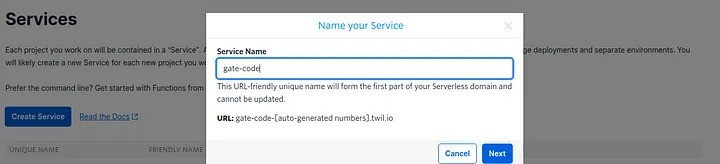
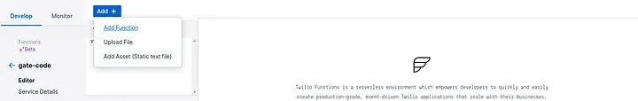
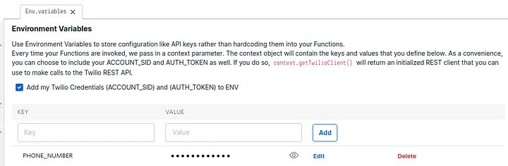
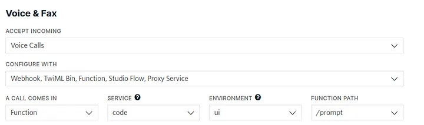

Automate Call Box Access Using Twilio
December 28, 2021
This guide demonstrates how to utilize a Twilio service to automate opening a gate or door controlled by a call box where users are required to answer a call and dial 9 to enable access.

Many apartment complexes and gated communities utilize call boxes that require visitors to call a resident who then needs to answer and dial 9 to unlock the door or gate. This can be inconvenient for both visitors and residents as it relies on the resident’s availability to pick up a phone call and coordinate entry. This process can be easily automated by using Twilio, thus alleviating the resident’s inconvenience and decreasing visitor wait times.
Twilio services can be configured in many different ways to suit a user’s unique access needs. If security is not a concern, one option is to grant gate/door access automatically when the number is called. Another approach could be leaving the gate open during certain hours and forwarding the call to a designated number outside of those hours. This particular article covers setting a passcode to enable visitor access. (The code for the other approaches can be found here)
The following steps will demonstrate how to set up a Twilio service that asks the visitor to enter a passcode at the call box, replies by sending a ‘9' DTMF tone to unlock the gate, and sends an SMS notification to the resident when access has been granted. If the passcode entered is incorrect, the call will be forwarded to a phone number.
1. Create a Twilio account and buy a number. Here’s a guide on how to do this.
2. Under Develop, Go to Functions > Services > Create Service. Name the new service as desired.
3. Click “Add Function” and create the four following functions: prompt, gather, call, and text.
4. Replace the code for the new functions with the respective code below:
5. Go to “Environment Variables” under Settings in the Twilio service and make sure the option “Add my Twilio Credentials (ACCOUNT_SID) and (AUTH_TOKEN) to ENV” is selected.
6. Add the environment variables listed below, with the text being entered as the key and numericals entered as the value:
- TWILIO_NUMBER and your Twilio Number formatted as +1 followed by digits only (ex: +14155551212)
- PASSCODE and 3 digits
- Note: To set the passcode to a different number of digits, change numDigits of the “gather” code
- PHONE_NUMBER and your personal phone number in the same format as the Twilio number
7. Save all functions and Deploy All.
8. Go to Phone Numbers > Manage Numbers > Active Numbers. Select the Twilio number and scroll down to Voice & Fax.
9. Assign the new service created by selecting its name from the dropdown, and set the function path to “/prompt.”
That completes the Twilio set up! Now all that’s left to do is to change the number on the call box to the Twilio number and enjoy the convenience of your new automation.
Reach out to me at farzinadil@gmail.com for any questions, suggestions, or feedback.